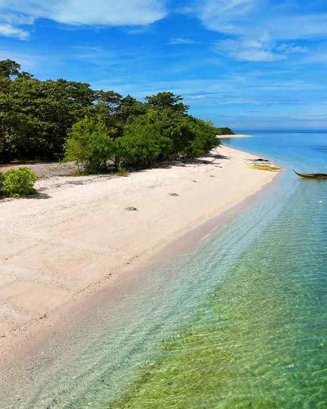

Zamboanga City sits at the far southwestern tip of Mindanao, facing the Basilan Strait, and it does not feel like anywhere else in the country. People greet you in Chavacano, a Spanish-based creole. Breakfast is grilled satti swimming in a red, spicy sauce. A short boat ride from the old Spanish fort brings you to a beach with sand tinted pink.
That beach, on Great Santa Cruz Island, is why most visitors come. It also runs on a booking system with daily visitor limits, so a little planning goes further here than in most beach towns. This guide puts the island logistics first, then covers Fort Pilar and the old city, the Once Islas day trip, what to eat, how to get in and a three-day plan.
Boat schedules, fees and visitor caps are set by the city and change from season to season. Use the figures below for planning, then confirm with the City Tourism Office or its Destino Zamboanga booking page before you lock in dates.

Zamboanga City at a glance
- Where: the southwestern tip of the Zamboanga Peninsula, on the Basilan Strait
- Airport: Zamboanga International (ZAM), with direct flights from Manila, Cebu and Davao
- Main draw: the pink sand of Great Santa Cruz Island, 15 to 20 minutes by boat from Paseo del Mar
- Island visits: day trips only, usually in the morning, with limited slots each day
- Language: Chavacano, with English and Filipino widely understood
- Time to give it: three days, or four with Once Islas
Great Santa Cruz Island: Book the Boat First
Great Santa Cruz lies about 4 km off the downtown shore, and the boats leave from the terminal at Paseo del Mar, beside Fort Pilar. The pink color comes from crushed red organ-pipe coral mixed into the white sand. It is soft rather than bubblegum bright, and it shows best when the sand is wet and the sun is high. National Geographic put the island on a list of the world's best beaches in 2017, and visitor numbers have been managed ever since.
The island is part of a protected landscape and seascape, which shapes the whole trip. Visits are day trips that typically run from early morning until about 2 PM, and nobody stays overnight. Each day has a visitor cap, so reserve through the City Tourism Office or an accredited tour operator before you fly instead of turning up at the terminal. Expect an environmental fee, a terminal fee, a shared boat and a tour guide, and expect a package to bundle all of these.
On the island you can walk the beach, swim in the marked areas, rent a shed for shade, and join extras such as a mangrove lagoon paddle or a vinta ride when they are offered. Single-use plastics are restricted, and taking sand, shells or coral is not allowed. Little Santa Cruz, the smaller island next to it, is closed to tourists, so a Great Santa Cruz booking is the only way to see the pink sand.
Fort Pilar and the Old City
Zamboanga dates its founding to 23 June 1635, the day a Jesuit engineer, Melchor de Vera, laid the cornerstone of the fort now called Fort Pilar. It was built to protect the Spanish settlement from raids, changed hands and was rebuilt several times, and was declared a National Cultural Treasure in 1973.
Today it does two jobs. The outer east wall holds an open-air shrine to Our Lady of the Pillar, the city's patroness,. Inside the walls is a regional branch of the National Museum, with galleries on the history and peoples of the region. Museum days and hours change, so check before you go.
Paseo del Mar, the waterfront esplanade right beside the fort, is where the city comes out in the late afternoon for the breeze, snacks and the sunset over the strait. Since the island boats leave from here too, it is an easy evening stop on the day you go to Santa Cruz.
More Things to Do in Zamboanga City
- Once IslasA community-run island tour about 40 km northeast of downtown, from barangays Panubigan and Dita on the Moro Gulf. Stops include Bisaya-Bisaya Island and its natural tidal pool, plus Sirommon. Local Sama and Tausug guides lead the trips. The tour takes most of a day and has traditionally not run on Fridays, so book ahead and confirm the day.
- Yakan weavingThe Yakan people of nearby Basilan are known for tightly woven cloth in bold geometric patterns. Weavers in the city sell table runners, bags and fabric by the metre, and buying from them directly keeps the money with the makers.
- Canelar Barter Trade CenterA covered market for batik, malong, imported snacks and household goods. Prices are open to polite haggling, and cash is the norm.
- Pasonanca ParkShady gardens and pools north of the city centre. It suits a slow morning, especially with children.
- Masjid Al-Islamia (the Rainbow Mosque)A working mosque with a brightly painted exterior. Photograph it from outside and ask before entering. Dress modestly and avoid prayer times.
What to Eat in Zamboanga
How to Get to Zamboanga City
Flying is the practical way in. Cebu Pacific and Philippine Airlines fly direct to Zamboanga International from Manila and Cebu, with the Cebu hop taking a little over an hour. Flights from Davao are worth checking too. The airport is close to the city centre, and a taxi or pre-booked car gets you to most hotels quickly.
Long-distance ferries and buses also reach the city, but they take far longer. They make sense mainly if you are already working your way around the peninsula. Pagadian is the nearest big stop by road, and our Pagadian City guide covers that leg. Farther north, the Rizal shrine in Dapitan is a natural add-on for a longer Zamboanga Peninsula trip.
A Three-Day Plan
- Day 1Pink sand
Be at the Paseo del Mar terminal at the time on your booking, usually around 7 AM. Spend the morning on Great Santa Cruz, return for a curacha lunch, rest through the heat, then walk Paseo del Mar at sunset.
- Day 2Fort, museum and markets
Start with satti, then Fort Pilar and the museum while it is cool. In the afternoon, visit the Yakan weavers and Canelar, and finish with knickerbocker.
- Day 3Islands or uplands
Take the full-day Once Islas tour if you booked it, or keep it easy with Pasonanca Park in the morning and a look at the Rainbow Mosque. Move the days around if wind or rain cancels the boats.
Know Before You Go
Plan ahead
- Read your government's travel adviceThe UK advises against all travel to western and central Mindanao, and travel insurance can be void if you go against that advice. Filipino travellers should still check local announcements. Our Mindanao safety guide explains how the advisories differ.
- Watch the sea, not just the skyA confirmed slot does not guarantee a crossing. The coast guard can stop island boats in rough water, so keep a spare morning.
- Plan around Fiesta PilarThe Zamboanga Hermosa Festival peaks around 12 October, the feast of Our Lady of the Pillar. It is the liveliest time to visit and the hardest time to find a room.
- Dress for a mixed cityZamboanga has large Catholic and Muslim communities. Swimwear belongs on the island, and covered shoulders and knees are the norm at the shrine and the mosque.
- Carry cash and a reusable bottleIsland fees, markets and satti houses run on cash, and refillable bottles help with the island's plastic rules.
Who Zamboanga Suits
Zamboanga rewards travellers who like a city with its own language, history and breakfast, and who don't mind booking ahead. The pink beach is a half day out of a longer stay, not the whole point. Pair it with a morning at Fort Pilar, a full plate of curacha and an evening on the waterfront, and the trip makes sense. If a spontaneous, walk-up beach holiday is what you want, the booking slots and advisory checks will feel like a lot of homework. For anyone curious about the parts of the Philippines that rarely make the brochures, it is worth that effort.

Comments
No comments yet. Been here recently? Share a tip or ask a question.
Leave a Reply